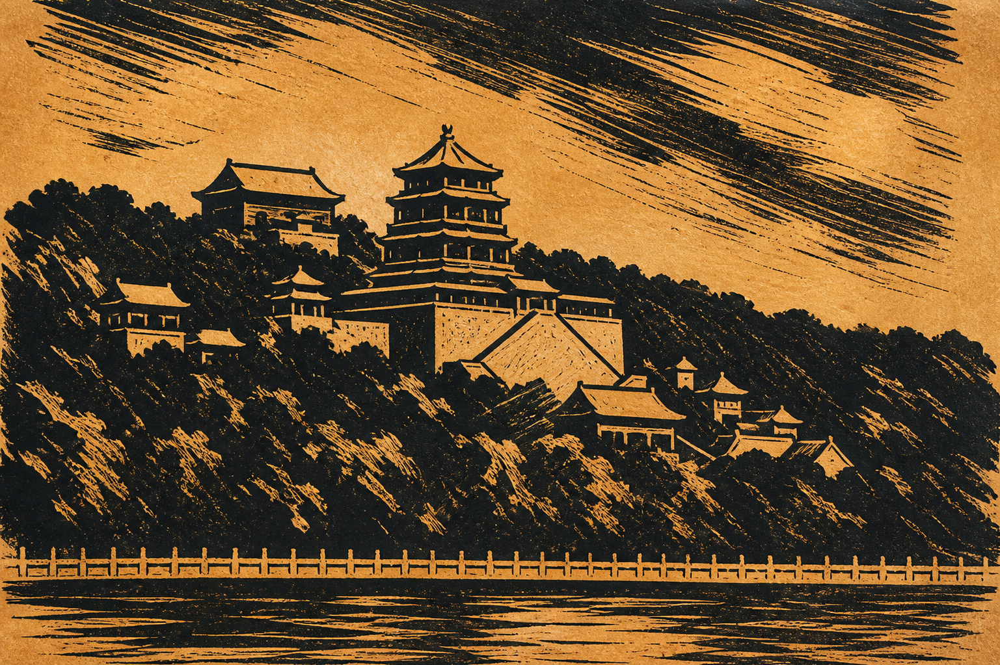

四种转印关系
木刻、木口木刻和麻胶版都属于凸版，先在凸起表面滚墨，再压到纸上。
先分清两件事：版画是把图像从版面转移到纸上的方法，报刊网点则是把连续影调拆成可印刷颗粒的复制语言。它们常在同一张插图里相遇，却不是同一种工艺。
01 / 分类
点击条目，让两组题材切换成同一种媒介。

大黑白关系与刀痕，是木刻首先给出的语言。
02 / 工艺实验室
木刻、木口木刻和麻胶版都属于凸版，先在凸起表面滚墨，再压到纸上。
同一网格中，点越大，覆盖纸张越多。退远后，眼睛把点阵整合成连续的明暗。
青、品红、黄、黑以不同网角叠印。角度与套准稍有变化，就会出现花形或摩尔纹。
03 / 放大镜
单色半调网点
CMYK 套印
钢笔排线或木刻
飞尘法或随机网点
04 / 两组题材，七种转译
所有图例均为艺术化重构，帮助观察媒介痕迹，而非复制原始照片。
下一间展室
离线网点生成器正在筹备中，未来会让你亲手观察 CMYK 网角、网点增大与套印误差如何改变一张照片。